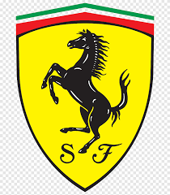

The Prancing Horse fields its cars in all the leading international championships for production-derived GTs involved in sprint and endurance races. The most prestigious competitions, including the IMSA SportsCar Championship and the GT World Challenge Europe, brim with adrenaline and excitement.
The car’s name encapsulates the true significance of all that has been achieved in terms of performance. The reference to the 90th anniversary of the foundation of Scuderia Ferrari underscores the strong link that has always existed between Ferrari’s track and road cars. A brilliant encapsulation of the most advanced technologies developed in Maranello, the SF90 Stradale is also the perfect demonstration of how Ferrari immediately transitions the knowledge and skills it acquires in competition to its production cars.